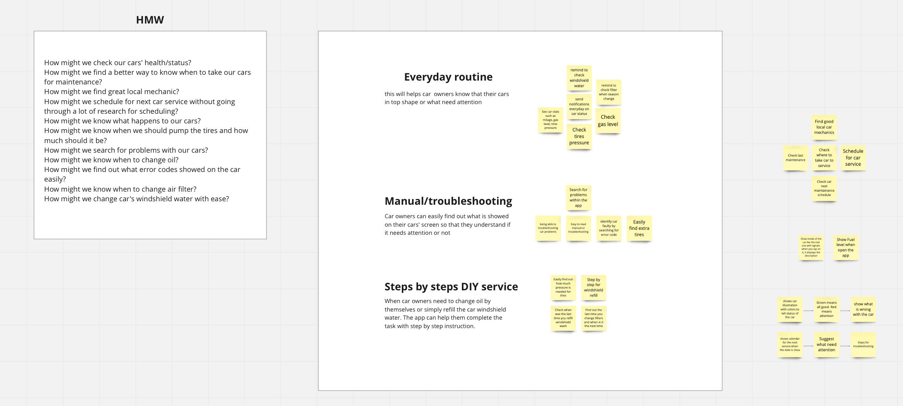
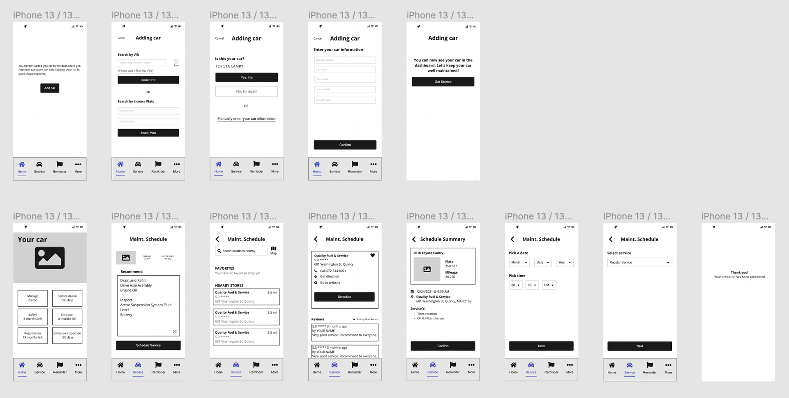
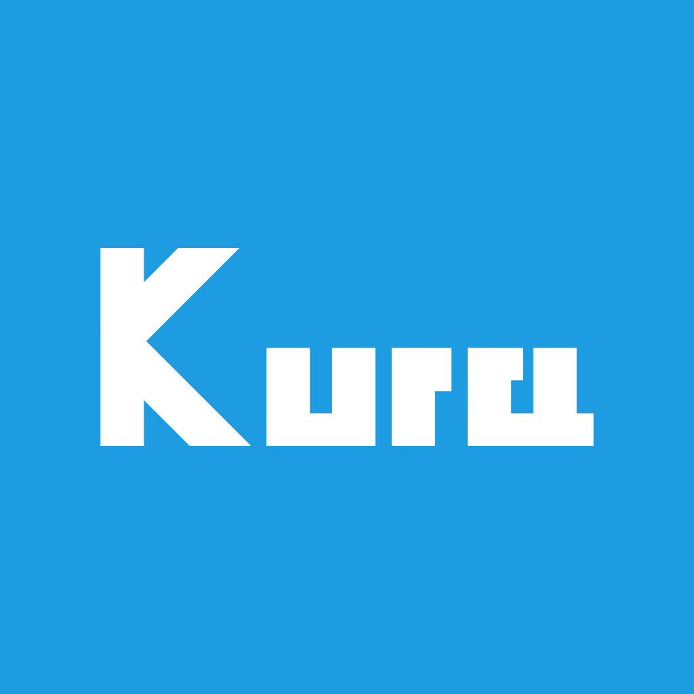
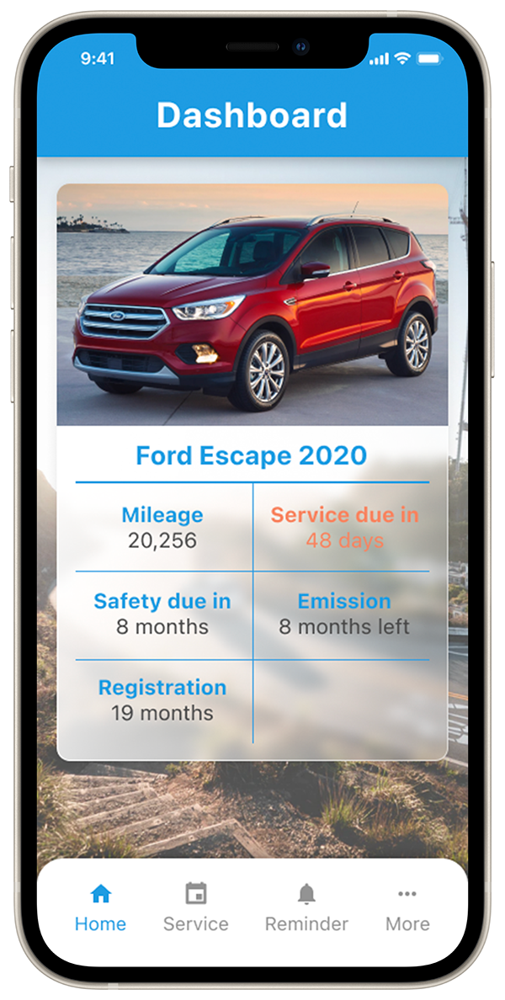
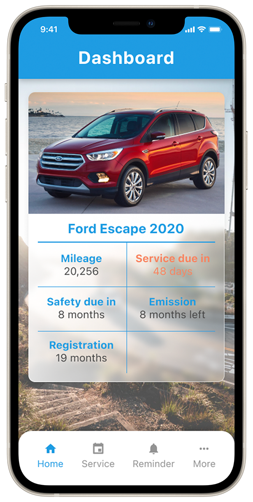
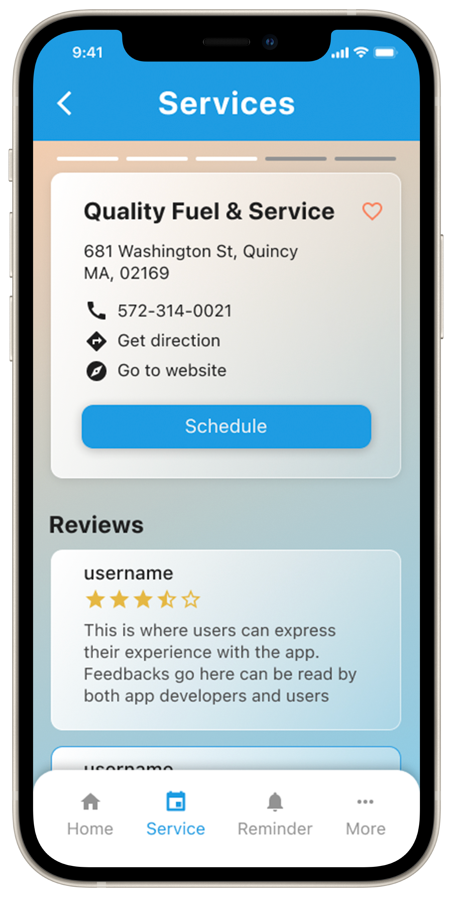
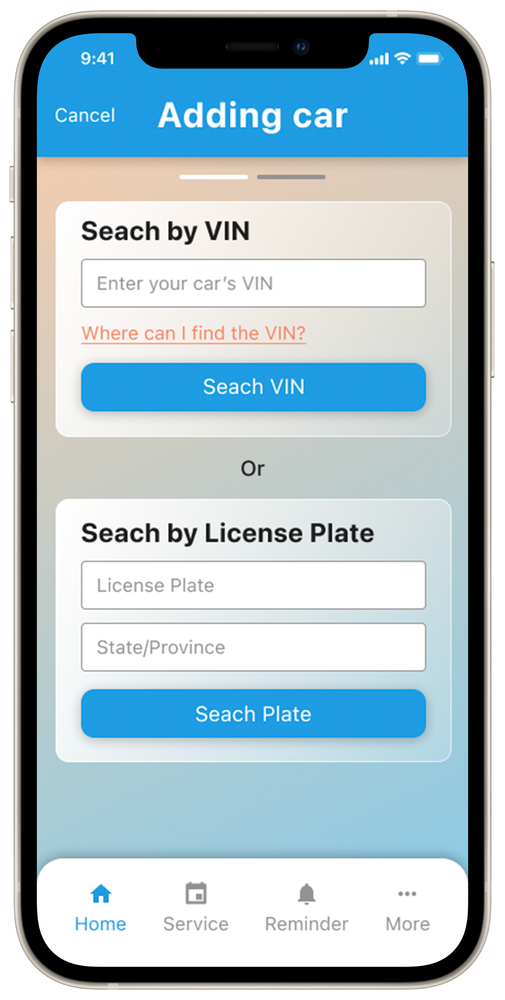
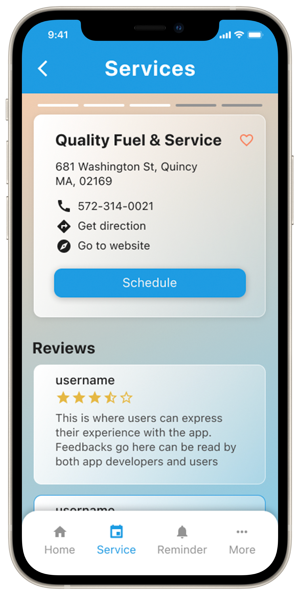
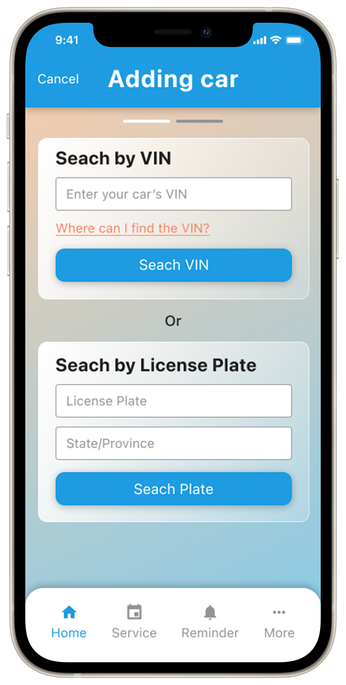

Case Study
Kura, a car care app
A maintenance companion that turns complex schedules into friendly reminders and transparent history for car owners.

Challenges
- Owners forget periodic maintenance.
- No easy way to track service history.
- DIY guidance and trustworthy advice are scarce.
Goals
- Track maintenance in one place.
- Surface clear next steps and reminders.
- Give owners confidence with reliable recommendations.
My focus
- Research & synthesis
- User flows, wireframes, prototypes
- UI system & usability testing
Research insights
What I learned
- People forget schedules and lack visibility into car health.
- They want guidance that is timely, simple, and trustworthy.
- Service history needs to be transparent and portable.
Design principles
- Clarity first: show upcoming tasks and status at a glance.
- Helpful nudges: reminders with context, not alarms.
- Trustworthy tone: friendly, confident visuals.
Solution highlights
Unified maintenance hub
Dashboard of car performance, service history, and upcoming tasks.
Smart reminders
Timely prompts for service with clear instructions or DIY steps.
Friendly visuals
Blue, confident visual language to build trust and reduce friction.
Persona

Ideate
“How might we” prompts to simplify maintenance, surface priorities, and reduce stress.
User Flow

Wireframes
Quick sketches and low-fidelity wires to clarify layout and feature hierarchy.

Lo-fidelity wireframes
Usability testing
Iterative usability rounds ensured users could complete tasks; flows were refined based on feedback.

Branding
Name derived from "cura" (care). Blue palette conveys confidence and clarity.
Hi-fi screens
Iterated high-fidelity designs after usability rounds.

 


 



Testing & learnings
- Clear reminders and history reduce anxiety and missed tasks.
- Concise flows improved task completion during testing.
- Visual clarity (labels, spacing) increased comprehension.
Prototype
Key takeaways
- Timely, contextual reminders are the core value.
- Transparency in history builds trust with owners.
- Early testing exposed clarity gaps before build.